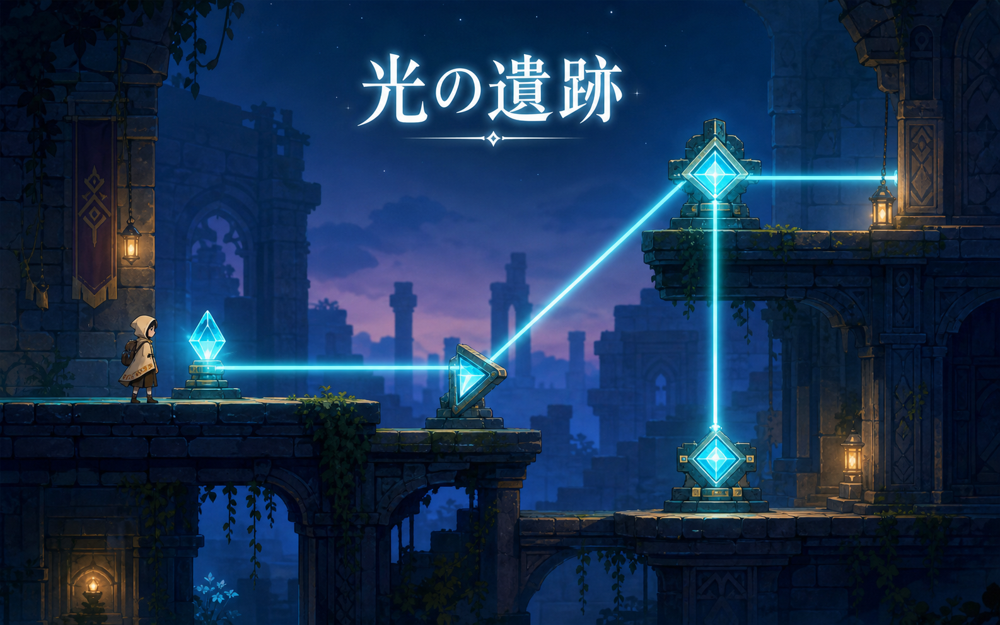

Game prototype
光の遺跡
光の向きを切り替えて遺跡を進む、2Dパズルゲームの企画・画面デザイン・試作をまとめた制作例です。
これは制作物表示の確認用に作成した架空のサンプルです。実在する学生作品ではありません。

担当範囲
企画、ステージ設計、キャラクター操作、演出調整
工夫した点
光の経路が一目で分かる色と、試行錯誤しやすい配置を検討しました。
使用技術
ゲームエンジン、2D画像編集、バージョン管理
ClassView Sample Works
ゲーム制作へ戻るGame prototype
光の向きを切り替えて遺跡を進む、2Dパズルゲームの企画・画面デザイン・試作をまとめた制作例です。
これは制作物表示の確認用に作成した架空のサンプルです。実在する学生作品ではありません。

企画、ステージ設計、キャラクター操作、演出調整
光の経路が一目で分かる色と、試行錯誤しやすい配置を検討しました。
ゲームエンジン、2D画像編集、バージョン管理